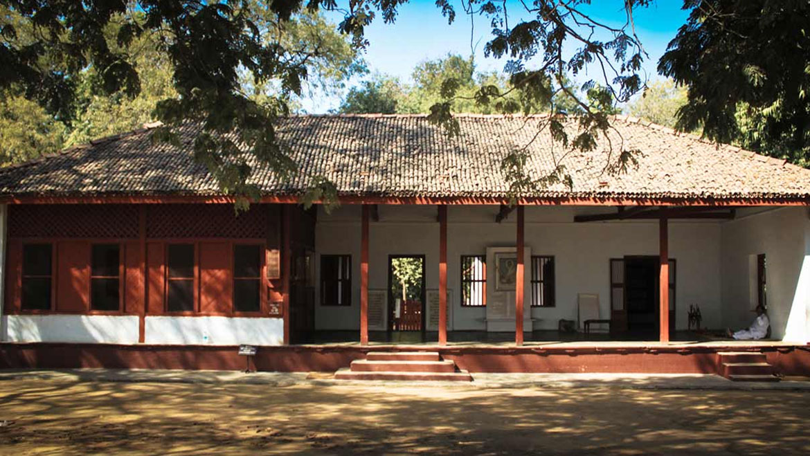

India is a remarkable destination with plethora of experiences. From 7th wonder of the world Taj Mahal to artistic palaces and forts all narrate the testimony of India's rich culture.

India has an extensive coastline and is the home to nature's best beaches. Some wild, some easy, some deserted and some offering a plethora of adventure activities.

The rich cultural heritage and history of India is reflected in its regal lineage. The magnificent forts and palaces are a reminder of the bygone eras, mystical kingdoms & rulers.
India has many beautiful Churches known worldwide for their magnificent architecture and history. Christmas is the time to explore these churches in their full splendour.

It has been seventy years since Mahatma Gandhi departed from our midst. But his life and soul continue to animate humanity transcending within our national boundaries.